My name is Muhammad Musa, and I am a passionate fan of the Yu-Gi-Oh! trading card game. I have been playing Yu-Gi-Oh! for several years and have developed a deep understanding of the game's mechanics, strategies, and lore. My love for the game has led me to participate in local tournaments and engage with the Yu-Gi-Oh! community online.
In addition to playing the game, I enjoy collecting rare and valuable cards, as well as building competitive decks. Some of my personal favorite decks to play include: Vanquish Soul, Blitzclique, and White Forest. I am always looking for new ways to improve my skills and stay up-to-date with the latest card releases and meta trends.
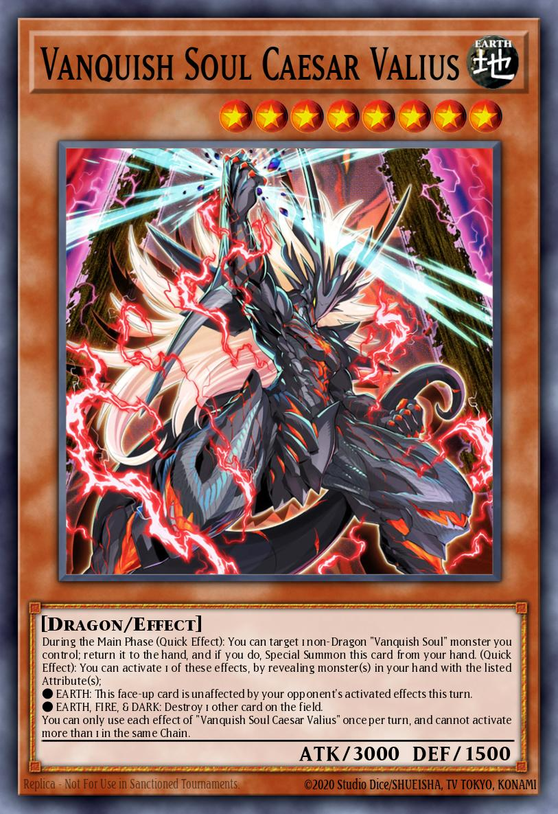
Vanquish Soul Caesar Valius
Image found on ygoprodeck.com
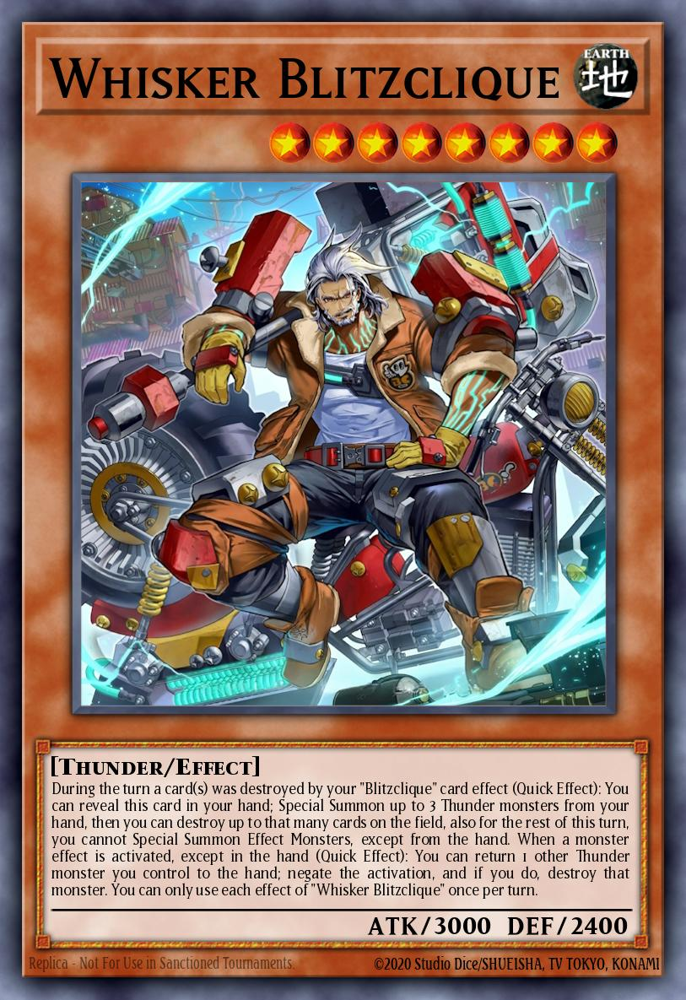
Whisker Blitzclique
Image found on ygoprodeck.com
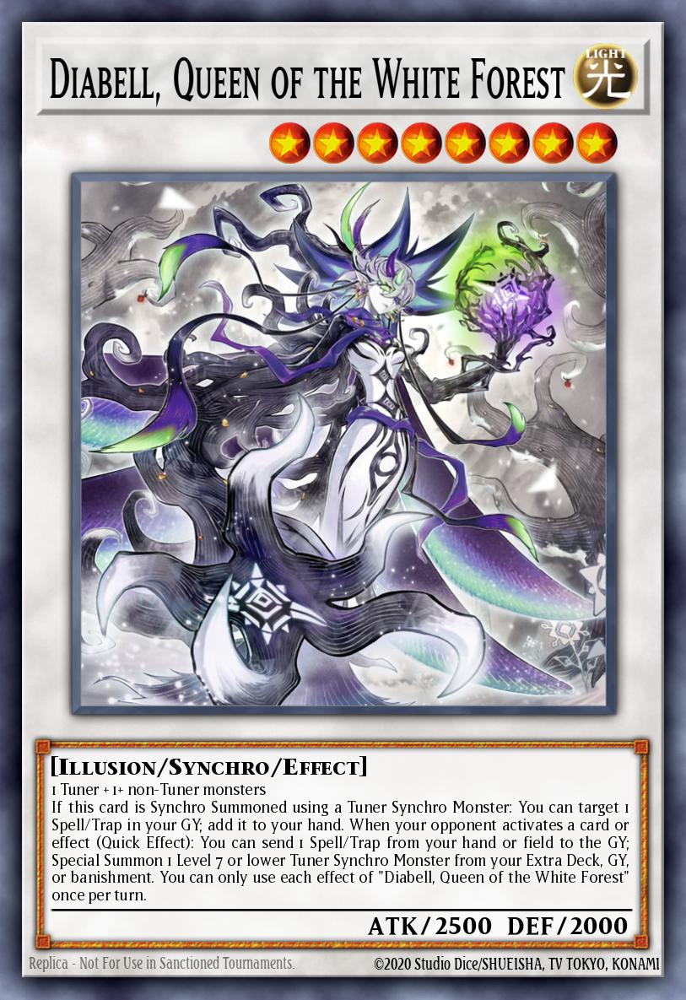
Diabell, Queen of the White Forest
Image found on ygoprodeck.com
Through this website, I aim to share my knowledge and experiences with fellow Yu-Gi-Oh! enthusiasts, providing insights into the game's history, recent developments, and strategic approaches. I hope to connect with other players who share my passion for the game and foster a community where we can learn from each other and grow as duelists.
What Is Yu-Gi-Oh!?
Yu-Gi-Oh! is a popular trading card game that originated in Japan and has since gained a global following. Created by Kazuki Takahashi, the game originated as a manga series following the protagonist Yugi Moto. The original manga actually wasn't centered around the trading card game at first, but a variety of different table top games reflecting Takahashi's love of games. One of those games called Dragons and Wizards caught the interest of readers, and the series would later be rebooted into Yu-Gi-Oh! Duel Monsters, which focused on the trading card game. The game has since expanded into a multimedia franchise, including an anime series, video games, and a wide range of merchandise.
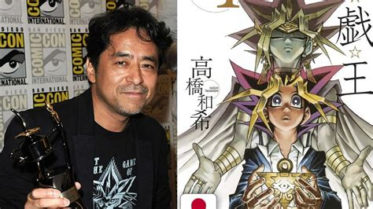
A photo of Kazuki Takahashi, the creator of Yu-Gi-Oh!
Image found on google.com
The game involves players using decks of cards to duel against each other, with the goal of reducing their opponent's life points to zero. Each player takes turns drawing cards, summoning monsters, and activating spells and traps to outmaneuver their opponent.
The game is known for its complex rules and strategic depth, requiring players to think critically and plan their moves carefully. With thousands of unique cards available, players can customize their decks to suit their preferred playstyle and strategy.
When Did Yu-Gi-Oh! Start?
The Yu-Gi-Oh! trading card game was first released in 1999 by Konami with the set "Vol.1", following the success of the manga and anime series. The game quickly gained popularity in Japan and eventually spread to other countries, including the United States and Europe. This has led to a branch in the formats the game is played in; with the TCG (Trading Card Game) for western territories, and OCG (Original Card Game) for eastern territories, being the two main formats.
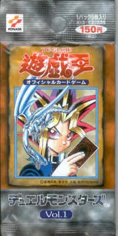
The first set of the Yu-Gi-Oh! trading card game, Vol. 1
Image found on the yugioh fandom wiki.
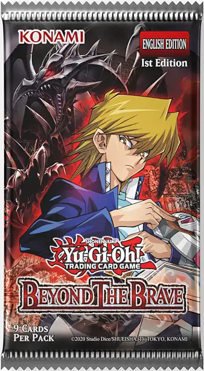
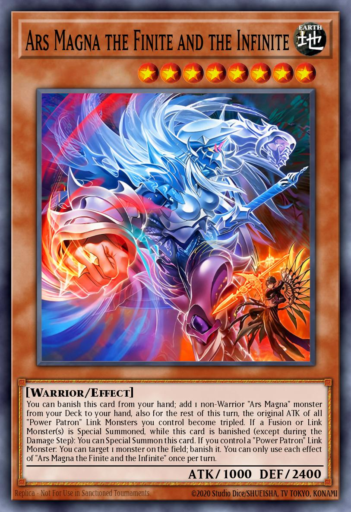
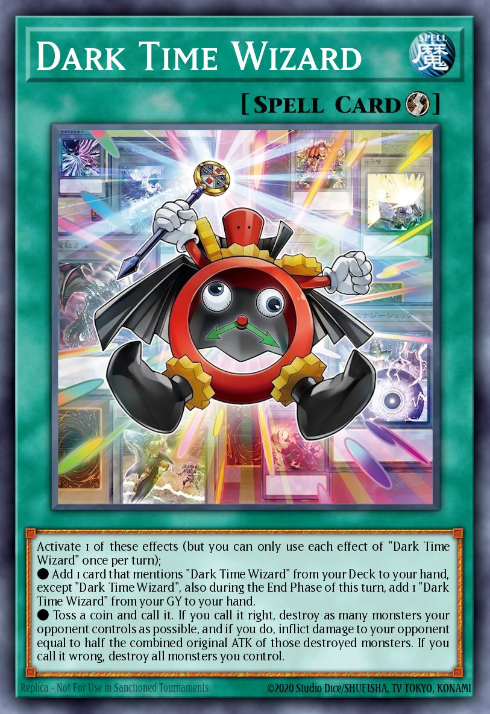
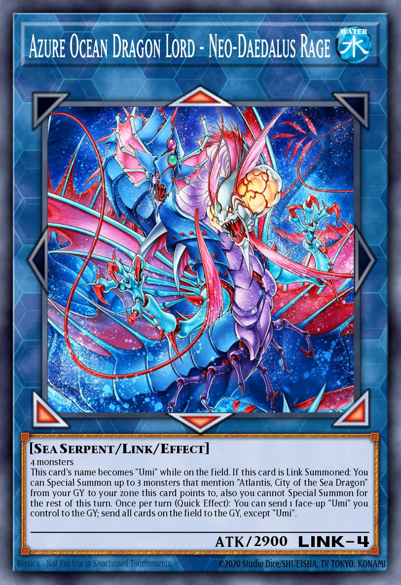
Beyond the Brave, the most recent set at the time of writing, and some of its new cards
Images found on ygoprodeck.com
Since its initial release, the game has undergone several updates and expansions, introducing new cards, mechanics, and formats to keep the gameplay fresh and engaging for players of all skill levels. The most recent set released (at the time of writing) is "Beyond the Brave" which added new support for a popular archetype in "Umi", the expansion on one of Yu-Gi-Oh's lore archetypes with the "Ars Magna" cards, and the introduction of the new "Dark Time Wizard" cards.
Where Can You Play Yu-Gi-Oh!?
Whether you prefer to play in person or online, there are plenty of opportunities to enjoy the Yu-Gi-Oh! trading card game and connect with other players who share your passion for the game.
If you're looking for in person play, many local game stores host regular events and tournaments where players can compete against each other and test their skills. You can also use the Yu-Gi-Oh! neuron app to find local events and tournaments. The app also helps keep track of your performance and progress to take part in major events.
If you prefer to play online, there are several platforms available that allow you to play the game virtually. Yu-Gi-Oh Master Duel is the official online platform for the game, offering a digital version of the trading card game that can be played on PC, consoles, and mobile devices.
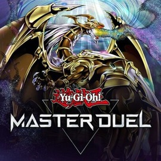
Yu-Gi-Oh Master Duel
Logo found on steam.
The game is completely free to play, with optional in-game purchases available for those who wish to enhance their experience. The game simulates all aspects of the TCG with pack openings, deck building, and strategic gameplay. If you don't pull the cards you want for your deck, the game also includes a crafting system that lets you craft any card in the game, with the exception of alternate art cards, and some limited time event cards.
How to Play Yu-Gi-Oh!
The Yu-Gi-Oh! trading card game is played between two players, each using a deck of cards that they have constructed. The objective of the game is to reduce your opponent's life points to zero by attacking with monsters and using spells and traps to gain an advantage.
The game features a wide variety of cards, each with its own unique abilities and effects. Players can customize their decks to suit their preferred playstyle and strategy, making each game a unique experience.
Players take turns drawing cards, summoning monsters, and activating spells and traps to outmaneuver their opponent. The game is known for its complex rules and strategic depth, requiring players to think critically and plan their moves carefully.
There are many ways to play Yu-Gi-Oh! depending on your preferences. The standard way to play is known as Advanced Format, where every card in the game is available for use except for those that are banned or limited (which means that only one copy can be in your deck, as opposed to the 3 copies that an unlimited card can be).
If you want a lower power format that still allows for interesting strategies, Edison Format might be the right choice for you. For people who enjoyed the simpler formats of the past, Goat Format allows players to experience the very early, Duel Monsters era of Yu-Gi-Oh, with Much older and powerful cards that are no longer available in the Advanced format.
If the action packed gamplay of Advanced is interesting to you, but some of the things there aren't quite what you're looking for, consider trying Genesys Format, which makes significant changes to the standard rules. Firstly it removes link and pendulum monsters from the game as they can be too complex and hard to balance. Secondly there is no longer a banlist; instead powerful cards are assigned a point value and you build your deck around those points, with a standard maximum point value of 100. While ther technically isn't a banlist, some cards are pointed at 100, meaning that would be the only powerful card you can include in your deck.
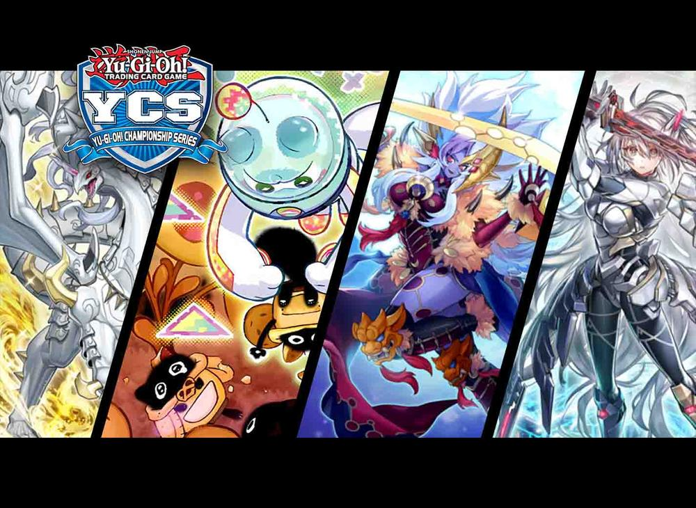
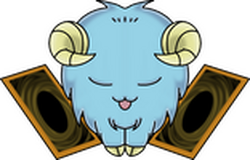
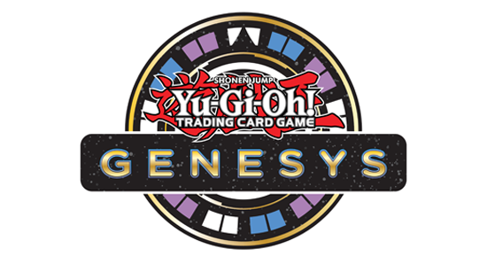
Yu-Gi-Oh! Formats
Images found on google.com
Why Play Yu-Gi-Oh!?
There are many reasons to play the Yu-Gi-Oh! trading card game, from the strategic depth and complexity of the gameplay to the social and community aspects of the game. Playing Yu-Gi-Oh! can help improve critical thinking, problem-solving, and decision-making skills, as players must analyze their options and make strategic choices in order to succeed.
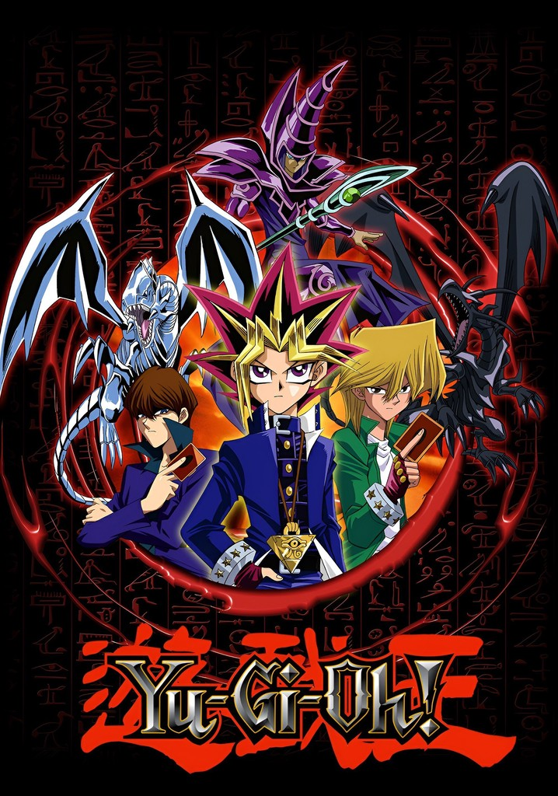
Yu-Gi-Oh! Duel Monsters
Image found on google.com
In addition to the mental benefits, playing Yu-Gi-Oh! can also be a fun and rewarding hobby. The game offers a wide variety of cards and strategies to explore, allowing players to express their creativity and develop their own unique playstyle. The social aspect of the game also provides opportunities to connect with other players, make new friends, and participate in tournaments and events.
Overall, playing Yu-Gi-Oh! can be a fulfilling and enjoyable experience for players of all ages and skill levels. Whether you're a seasoned veteran or a newcomer to the game, there is always something new to discover and explore in the world of Yu-Gi-Oh!